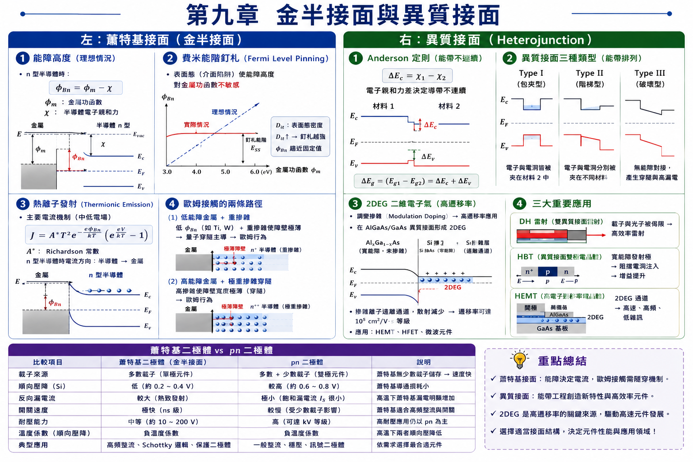
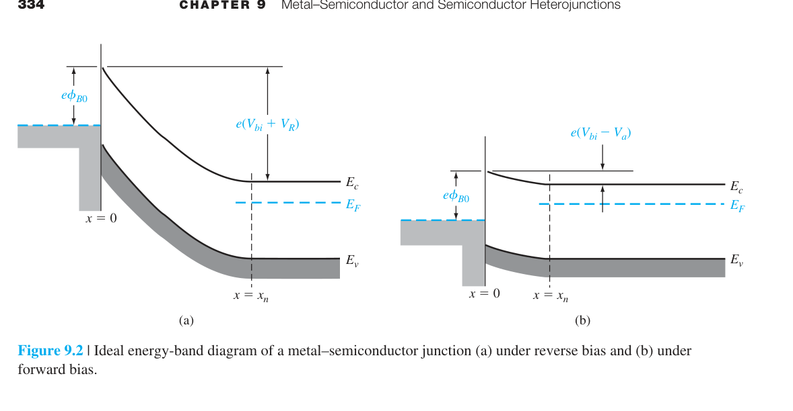
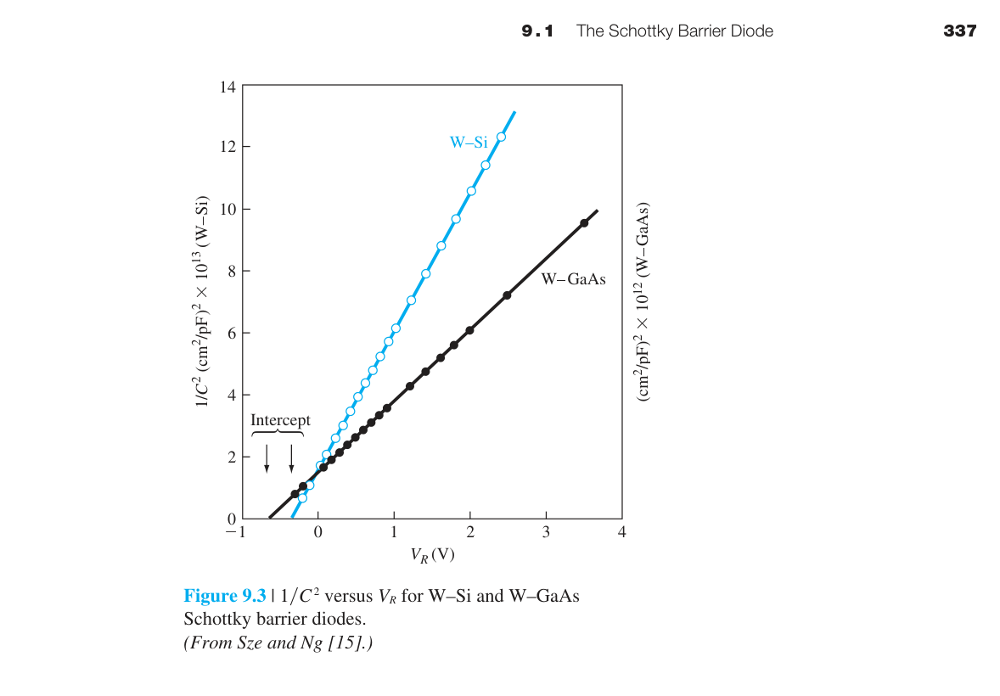
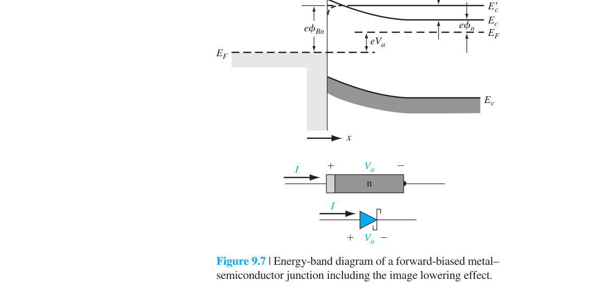
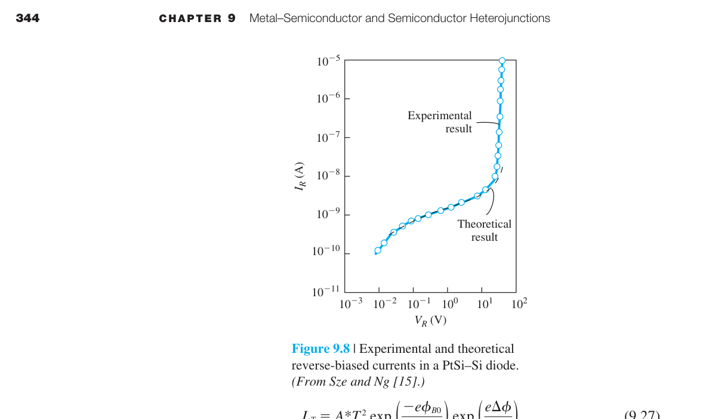
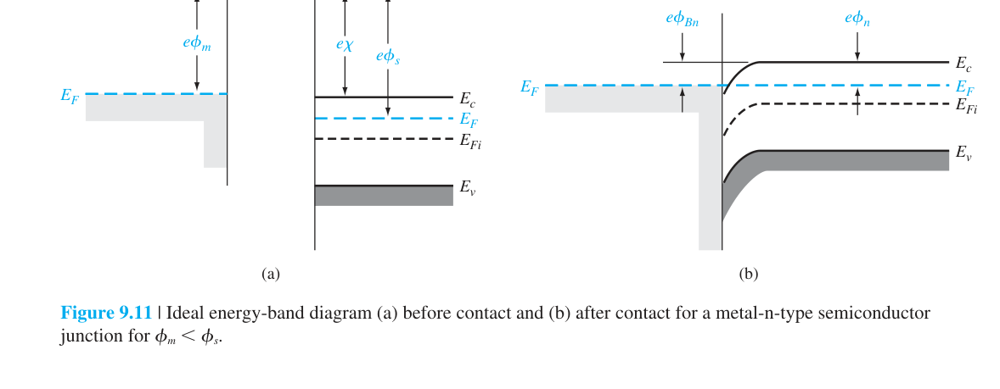

金屬-半導體接面與異質接面
到目前為止，我們討論的「接面」都是同一種材料中 p 型和 n 型的接觸——所謂的同質接面（homojunction）。但真實的半導體元件不只包含 pn 接面。每一個電晶體、每一個二極體都需要金屬電極把信號和電力從外部世界引入半導體內部。金屬與半導體的接觸就是本章的第一個主題——金屬-半導體接面。
更進一步，把兩種不同能隙的半導體放在一起會發生什麼？這種異質接面（heterojunction）能實現同質接面無法達到的功能——例如把電子和電洞侷限在奈米尺度的薄層中，從而製造出雷射和超高速電晶體。這是本章的第二個主題。
這兩類接面看似冷門，但它們在每一個半導體元件中都是不可或缺的。沒有好的歐姆接觸，你的 MOSFET 源極電阻會吞噬掉大部分的驅動電流。沒有異質接面，就沒有光纖通訊用的雷射二極體、沒有手機中的 HBT 功率放大器、沒有衛星通訊中的 HEMT 低雜訊放大器。
2. 蕭特基二極體是多數載子元件→無少數載子儲存→$t_s\approx0$→高速開關
3. 蕭特基 $J_S$ 比 pn 接面大 5–7 個數量級→相同電流下 $V_F$ 更低
4. 蕭特基能障降低（image-force lowering）：$\Delta\phi\propto\sqrt{E_{max}}$——高電場下能障變矮
5. 界面態 Fermi-level pinning→實際 $\phi_{Bn}$ 偏離理想——GaAs 尤其明顯
6. 歐姆接觸：重摻雜→空乏區極窄→穿隧主導→線性 $I$–$V$，比接觸電阻 $\rho_c\propto e^{\phi_B/\sqrt{N}}$
7. 異質接面能帶對準：straddling（Type I）、staggered（Type II）、broken-gap（Type III）
8. 調變摻雜（modulation doping）：摻雜只在寬能隙側→載子落入窄能隙側的量子井→2DEG
9. 2DEG 遷移率極高（$>10^6$ cm²/V-s 低溫）→HEMT 的速度基礎
10. 蕭特基+pn 比較表：蕭特基快但 $V_{BR}$ 低、$J_S$ 大；pn 耐壓高但慢

9.1.1 蕭特基能障——金屬碰到半導體會怎樣？
想像你把一塊金屬（例如鋁）和一塊 n 型矽緊緊貼在一起。在接觸的瞬間，兩側的電子處於不同的「化學勢」——金屬的 Fermi 能階 $E_{Fm}$ 和半導體的 Fermi 能階 $E_{Fs}$ 通常不同。如果 $E_{Fs} > E_{Fm}$（半導體的電子「更想逃離」），電子就會從半導體流向金屬，直到兩側的 Fermi 能階對齊。
電子的淨流動在界面附近留下不可移動的帶電雜質離子——n 型半導體側留下正的 $N_d^+$ 離子，形成空乏區。這個空間電荷產生內建電場——指向金屬，阻止更多電子從半導體流向金屬。最終達到動態平衡。

在理想情況下（蕭特基-Mott 模型），金屬端的能障高度就是金屬功函數與半導體電子親和力的差值：
這個公式極其直觀：電子在金屬中的 Fermi 能階比真空能階低 $\phi_m$。在接觸後的平衡態，金屬和半導體的真空能階對齊（它們共用同一個表面），而半導體導帶底比真空能階低 $\chi$。所以金屬的 $E_{Fm}$ 比半導體的 $E_c$ 高 $\phi_m-\chi$——這正好是電子從金屬進入半導體導帶需要跨越的能障。
半導體側的能帶彎曲——內建電位 $V_{bi}$：$\phi_{Bn}$ 是從金屬端看的能障。從半導體端看，電子要進入金屬需要克服的能障是 $V_{bi}$。這兩者之間的關係是 $V_{bi} = \phi_{Bn} - \phi_n$，其中 $\phi_n = E_c - E_F = (kT/e)\ln(N_c/N_d)$ 是 n 型半導體中導帶底與 Fermi 能階的能量差。$\phi_n$ 的物理意義是：把半導體的 Fermi 能階「參考」到導帶底需要補上的能量差。
對於 p 型半導體，類似推導給出能障高度 $\phi_{Bp} = \chi + E_g - \phi_m$。注意 $\phi_{Bn} + \phi_{Bp} = E_g$——這不是巧合，而是能帶對齊的自洽要求。對 Si：$E_g=1.12$ eV，所以如果你知道 $\phi_{Bn}$，就自動知道 $\phi_{Bp} = 1.12 - \phi_{Bn}$。
| 金屬 | $\phi_m$ (eV) | Si $\phi_{Bn}$ 理想 (eV) | Si $\phi_{Bn}$ 實際 (eV) |
|---|---|---|---|
| Al | 4.1 | 0.05 | 0.50–0.70 |
| Ti | 4.3 | 0.25 | 0.50–0.60 |
| Au | 5.1 | 1.05 | 0.75–0.80 |
| Pt | 5.7 | 1.65 | 0.85–0.90 |
注意「理想」和「實際」的差異——這就是下一節費米能階釘札的主題。
9.1.2 空乏區、電場、電容


一旦理解了 $\phi_{Bn}$ 和 $V_{bi}$，空乏區的分析與 pn 接面幾乎完全相同。金屬側電子濃度極高（∼$10^{22}$ cm⁻³）→空乏區厚度可忽略。半導體側的空乏區與單側突變 p⁺n 接面完全一致（金屬類似 p⁺ 側，無限重摻雜）。
Poisson 方程推導給出空乏區寬度：
這裡 $V_R$ 是外加反向偏壓（如果金屬接負、n 型半導體接正）。$V_R>0$→$W$ 變寬。最大電場在冶金界面處：$E_{\text{max}} = eN_d W/\epsilon_s$。單位面積接面電容：$C_j = \epsilon_s/W$。
9.1.3 費米能階釘札——為什麼理想預測總是錯的？
如果你對照上一節的表格，會發現蕭特基-Mott 模型預測的 $\phi_{Bn}$ 與實驗值有巨大偏差。例如 Al/Si 的理想 $\phi_{Bn}=0.05$ eV（幾乎是歐姆接觸！），但實際量到 0.5–0.7 eV（明顯的整流接觸）。為什麼？
答案在半導體的表面。晶體在表面突然終止→大量共價鍵懸空（表面態，surface states或稱 dangling bonds）。這些表面態的能階分布在能隙中，密度高達 $10^{12}$–$10^{14}$ cm⁻²eV⁻¹。表面態可以接受或給出電子→在表面建立一個電偶極層→這個偶極層強制半導體表面的 Fermi 能階鎖定在特定的能隙位置——與接觸的金屬種類幾乎無關。

量化 Fermi level pinning：定義表面態的中性能階 $\phi_0$（charge neutrality level）。如果表面態密度 $D_{it} \to \infty$，$\phi_{Bn}$ 被完全釘在 $E_g - \phi_0$。Si 的 $\phi_0$ 約在價帶上方 0.3–0.4 eV→$\phi_{Bn}$ 被釘在 0.7–0.8 eV 附近。GaAs 的 $D_{it}$ 更高→$\phi_{Bn}$ 固定在 ∼0.8 eV，幾乎完全與金屬種類無關。
9.1.4 蕭特基二極體的電流-電壓特性

蕭特基二極體的電流傳輸機制與 pn 接面不同。pn 接面中，少數載子先被注入、然後擴散、最後復合——這是一個擴散主導的過程。蕭特基接面中，電子不需要先成為少數載子——它們直接靠熱能跨越（或穿隧通過）能障頂部。這個過程稱為熱離子發射（thermionic emission）。
物理圖像：金屬中有海量的電子分布在 Fermi 能階附近。這些電子以隨機熱速度運動。其中只有那些能量夠高、且速度方向朝向界面（向 +x 方向）的電子，才有機會跨越 $\phi_{Bn}$ 能障進入半導體。跨越能障的機率自然是 Boltzmann 因子 $e^{-e\phi_{Bn}/kT}$。
其中 $A^* = 4\pi e m^* k^2/h^3$ 是有效 Richardson 常數。對 n-Si，$A^*\approx120$ A/cm²K²；對 n-GaAs，$A^*\approx8$ A/cm²K²（因 $m^*$ 較小）。室溫下 $A^*T^2\approx10^7$ A/cm²。
$J_S = A^*T^2 e^{-e\phi_{Bn}/kT}$ 的數值：對 Si（$\phi_{Bn}=0.7$ eV，$kT=0.026$ eV）：$e^{-0.7/0.026}=e^{-27}\approx2\times10^{-12}$→$J_S\approx2\times10^{-5}$ A/cm²。這比典型 Si pn 接面的 $J_S$（∼$10^{-10}$–$10^{-12}$ A/cm²）大了五到七個數量級。為什麼？因為 pn 接面的 $J_S\propto n_i^2\propto e^{-E_g/kT}=e^{-1.12/0.026}\approx e^{-43}$，衰減遠比 $e^{-\phi_{Bn}/kT}=e^{-27}$ 劇烈。
• 蕭特基優勢：多數載子元件——無少數載子注入→無儲存電荷→無擴散電容→開關速度可達 GHz 級。順向壓降低（0.3–0.5 V vs pn 的 0.7 V）。
• pn 優勢：反向漏電流極低（$J_S$ 小 5–7 個數量級）、崩潰電壓高（適合高壓整流）。
• 典型取捨：電源供應器的輸出整流→蕭特基（效率高）；高壓功率整流→pn（耐壓高）；RF 混頻器/檢波器→蕭特基（速度快）；TTL 邏輯中的蕭特基箝位→防止 BJT 進入飽和（利用蕭特基的 0.3 V 低順向壓降）。
9.1.5 歐姆接觸——每個元件的必要結構
一個二極體需要一個整流接觸（蕭特基或 pn）來實現非線性 I-V。但每個元件還需要歐姆接觸來連接外部電路——這些接觸必須是純電阻性的，不能有整流效應。如果你把一個交流信號加到一個有整流效應的接觸上，信號會被削波、失真。
特定接觸電阻率 $\rho_c$（specific contact resistivity）是衡量歐姆接觸品質的指標——單位 Ω·cm²。現代 CMOS 技術要求 $\rho_c < 10^{-8}$ Ω·cm²（接觸電阻小於通道電阻）。
實現低 $\rho_c$ 有兩條路徑：
路徑一：低能障接觸
如果 $\phi_m < \chi$（n 型），$\phi_{Bn}$ 理論上為負→能障不存在→電子可自由雙向流動→$\rho_c$ 極低。然而因為 Fermi level pinning，純低能障策略在 Si 上幾乎不可行——無論你選什麼金屬，$\phi_{Bn}$ 都卡在 0.5–0.9 eV 之間。但在某些 III-V 材料上（如 InAs，表面態密度低），低能障歐姆接觸是可行的。
路徑二：重摻雜穿隧接觸（現代 CMOS 的標準方法）
即使 $\phi_{Bn}$ 不低，如果把半導體表面摻雜到極重（$>10^{19}$ cm⁻³），空乏區變得極窄（<5 nm）。在這個尺度下，電子不再需要熱激發越過能障頂部——它們可以直接量子穿隧穿過能障。穿隧機率對寬度呈指數敏感：
$N_d$ 越大→$W$ 越窄→穿隧機率越高→$\rho_c$ 越低。在現代 CMOS 中，源極/汲極區域上方會額外沉積一層金屬矽化物（silicide，如 TiSi₂、NiSi），然後在矽化物下方極淺的區域進行超高劑量離子植入（$>10^{20}$ cm⁻³）來形成穿隧歐姆接觸。
9.2 異質接面
到目前為止我們的所有接面都是同一種材料的不同摻雜類型（同質接面）。異質接面把兩種能隙不同的半導體接在一起。最經典的例子是 GaAs（$E_g=1.42$ eV）和 Al$_x$Ga$_{1-x}$As——後者的能隙可隨 Al 成分 $x$ 從 1.42 eV（$x=0$）調整到超過 2.1 eV（$x>0.45$）。

兩種材料接觸時，Anderson 定則描述了能帶如何對齊：
物理圖像：電子親和力 $\chi$ 告訴你導帶底相對於真空能階的位置。如果材料 1 的 $\chi_1$ 小於材料 2 的 $\chi_2$，材料 1 的導帶底在能量上更高→電子傾向於從材料 1 流向材料 2 的導帶。$\Delta E_c$ 就是這個導帶偏移量。價帶偏移 $\Delta E_v$ 則由能隙差扣除導帶偏移得來。
9.3.4 異質接面的平衡態靜電學
異質接面在熱平衡下的能帶彎曲比同質接面更複雜——因為兩側的能隙、介電常數、摻雜濃度都不同。平衡條件要求兩側的 Fermi 能階對齊。
以 n-AlGaAs/p-GaAs 為例：電子從 n-AlGaAs 流向 p-GaAs（跨越 $\Delta E_c$ 能障）→在界面兩側形成空乏區。但與同質 pn 接面不同的是，空乏區的電場分布不對稱——因為兩側的介電常數和摻雜不同。Poisson 方程必須在兩側分別求解，界面處的邊界條件是電位移連續：$\epsilon_1 \mathcal{E}_1 = \epsilon_2 \mathcal{E}_2$。
調變摻雜（Modulation Doping）的關鍵：在 HEMT 結構中，只有 AlGaAs 層摻雜（$N_d \sim 10^{18}$ cm$^{-3}$），GaAs 層不摻雜。電子從 AlGaAs 轉移到 GaAs 的導帶中→在界面形成 2DEG。這些電子與母體施體離子空間分離（距離 ∼10 nm）→雜質散射被大幅壓制→遷移率比均勻摻雜的 GaAs 高 10–100 倍。
9.3.5 異質接面的電流-電壓特性
異質接面的電流傳輸比同質接面複雜得多——因為存在多種並行的傳輸機制：
① 熱離子發射（Thermionic Emission）：載子獲得足夠熱能越過 $\Delta E_c$ 能障→主導高溫和低偏壓下的電流。$I \propto e^{-e\phi_B/kT}(e^{eV_a/kT}-1)$。
② 場助穿隧（Field-Assisted Tunneling）：在高偏壓下，能障被電場壓窄→載子可穿隧通過→電流快速增大。
③ 缺陷輔助復合（Recombination via Interface States）：界面處的缺陷態作為復合中心→類似 pn 接面的 SRH 復合電流。$I \propto e^{eV_a/2kT}$。
異質接面的三種類型
| 類型 | 能帶排列 | 載子侷限 | 例子 |
|---|---|---|---|
| Type I（跨立） | $\Delta E_c$ 和 $\Delta E_v$ 同側 | 電子和電洞在同一層 | GaAs/AlGaAs |
| Type II（錯開） | $\Delta E_c$ 和 $\Delta E_v$ 反向 | 電子在一層、電洞在另一層 | InP/InGaAs |
| Type III（斷開） | 一個的價帶頂 > 另一個的導帶底 | 半金屬行為 | InAs/GaSb |
• 雙異質接面雷射（DH Laser）：AlGaAs/GaAs/AlGaAs 三明治結構。寬能隙的 AlGaAs 層將注入的電子和電洞同時侷限在 GaAs 主動層中。這大幅提高了復合效率→降低了雷射的閾值電流→實現了室溫連續波操作。CD/DVD/Blu-ray 的光讀取頭、光纖通訊的光源，都是異質接面雷射的後代。
• 異質接面雙極性電晶體（HBT）：射極用寬能隙材料（如 AlGaAs）取代 GaAs→$\gamma$（射極注入效率）因為 $N_E$ 項不再出現而大幅提高→$\beta$ 可達數千（傳統 BJT 的 $\beta$ 受 $\gamma$ 限制在 50–200）。HBT 是手機功率放大器和光纖通訊驅動電路的主力。
• 高電子遷移率電晶體（HEMT）：在 AlGaAs/GaAs 異質接面界面處，電子從 AlGaAs 層轉移到 GaAs 層→在界面形成一層極薄的二維電子氣（2DEG）。2DEG 中的電子與其母體施體離子在空間上分離→雜質散射大幅降低→遷移率可達 $10^6$ cm²/V·s（低溫）→極低雜訊、極高頻率的放大。HEMT 是衛星通訊、雷達、和射頻天文望遠鏡中低雜訊放大器的核心元件。
本章摘要
- 蕭特基能障（理想）：$\phi_{Bn}=\phi_m-\chi$。$\phi_{Bn}$ 是金屬端電子跨越的能障，$V_{bi}=\phi_{Bn}-\phi_n$ 是半導體側能帶彎曲。
- 空乏區分析：與 p⁺n 接面完全相同。$W\propto\sqrt{V_{bi}+V_R}$。Mott-Schottky 分析是實驗量測的標準方法。
- 費米能階釘札：表面態（懸鍵）密度使 $\phi_{Bn}$ 對金屬功函數不敏感。Si 的 $\phi_{Bn}$ 通常卡在 0.5–0.9 eV。這是接觸工程的主要挑戰。
- 蕭特基二極體：$J=A^*T^2e^{-e\phi_{Bn}/kT}(e^{eV_a/kT}-1)$。熱離子發射機制的多數載子元件→無擴散電容→極快開關速度。
- 歐姆接觸：低能障（$\phi_m<\chi$）或重摻雜穿隧實現低 $\rho_c$。奈米級 CMOS 中接觸電阻是關鍵瓶頸。
- 異質接面：Anderson 定則 $\Delta E_c=\chi_1-\chi_2$。Type I/II/III 三類。應用：DH 雷射、HBT、HEMT。
推導、假設與章末診斷
方程式使用契約
- 理想 Schottky–Mott 能障 $\phi_{Bn}=\phi_m-\chi$ 假設界面無氧化層、無界面態、無偶極與無費米能階釘扎。
- 熱離子發射模型要求載子越障為速率限制、平均自由程與界面條件適合；薄能障／重摻雜時須加入穿隧。
- 金半空乏寬度沿用一維 depletion approximation。
- Anderson 異質接面定則假設電子親和力可直接對齊且無界面電荷；真實 band offset 應以實驗或更完整界面模型校正。
中間推導：熱離子發射電流
- 只統計法向動能足以越過 $\phi_{Bn}$ 的電子通量。
- 對 Maxwell–Boltzmann 分布積分，得到 $J_{s}=A^{**}T^2e^{-q\phi_{Bn}/kT}$。
- 偏壓使半導體到金屬的越障率乘 $e^{qV/kT}$，反向通量近似不變。
- $J=J_s(e^{qV/kT}-1)$；非理想界面以理想因子 $n$ 修正指數分母。
章末練習與概念診斷
為何重摻雜可把高能障接觸變成近似歐姆接觸？
重摻雜使空乏層變薄，載子可穿隧而非必須熱越障；接觸電阻因此大幅下降。
Schottky 二極體快的核心原因是較低順向壓降嗎？
不是主要原因；它是多數載子元件，沒有大量少數載子儲存，因此反向恢復快。
延伸計算練習
完成上方診斷後，請在不查公式的情況下重建代表推導，並改變一個參數檢查極限行為。更多含數值與解答的題目：本章完整習題頁。